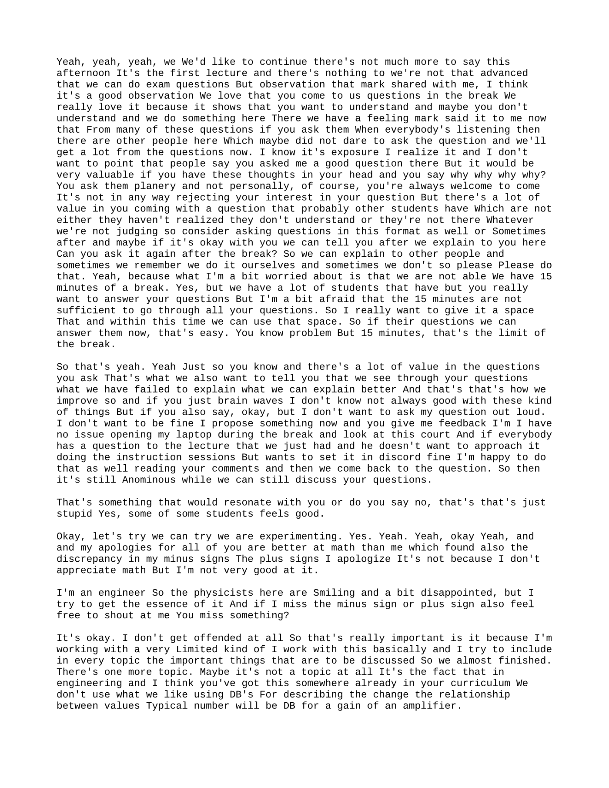
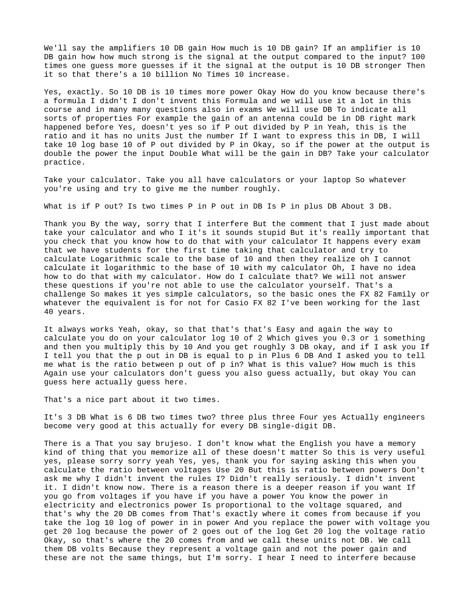
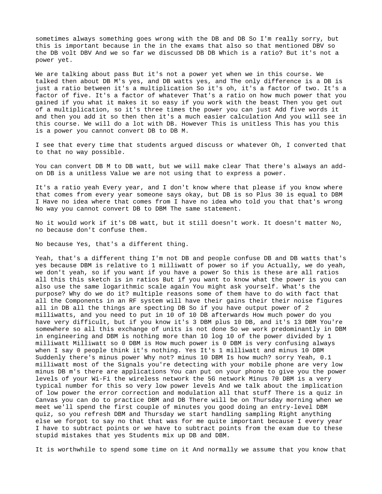
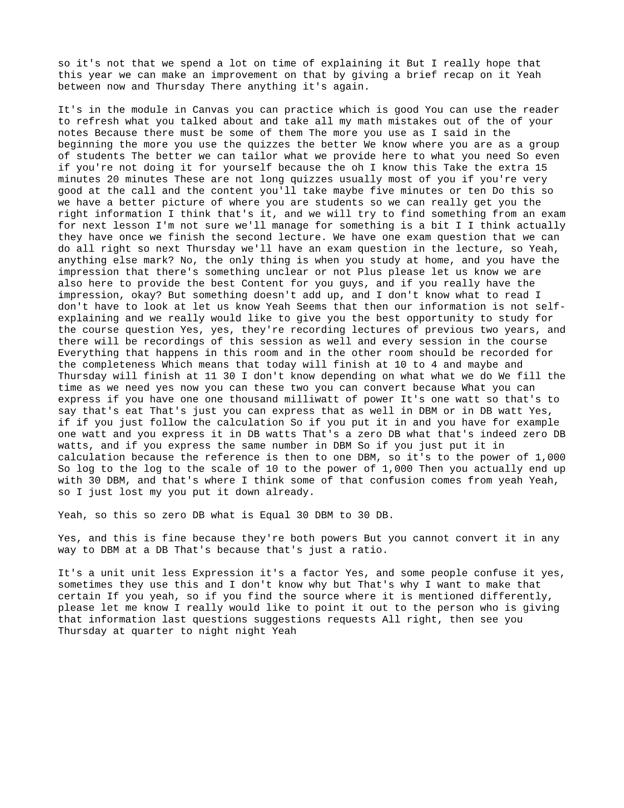

Summary
This lecture segment introduces how engineers use decibels to express ratios, especially for amplifier gain, antenna gain, and RF system calculations. The core definition given is that a power ratio in decibels is calculated as , so a gain of 10 dB corresponds to a tenfold power increase and a doubling of power corresponds to about 3 dB. The lecture distinguishes power-ratio dB from voltage-ratio expressions, where is used because electrical power is proportional to voltage squared. A major emphasis is preventing confusion between unitless dB and absolute power units such as dBm and dBW. The source defines dBm as and explains examples such as 0 dBm = 1 mW, -10 dBm = 0.1 mW, and typical mobile or Wi‑Fi signals around -70 dBm. It also explains that 0 dBW equals 30 dBm because both are absolute power units with different reference levels, while plain dB cannot be converted into dBm because dB is only a ratio. The lecture also includes procedural advice: practice calculator use for base-10 logarithms, use quizzes in Canvas to reinforce dB and dBm, and ask questions publicly or through Discord so common misunderstandings can be addressed.
Knowledge tree
- Public and Anonymous Question Asking as a Learning Method (Page 1)
- Engineering Use of Decibels for Describing Gain (Page 1, Page 2)
- Power Ratio Formula for Decibels (Page 2)
- Calculator Skill for Logarithmic Calculations (Page 2)
- Voltage Ratios Use 20 Logarithm Instead of 10 (Page 2, Page 3)
- dB as a Unitless Ratio (Page 2, Page 3, Page 4)
- Why Decibel Arithmetic Is Useful in RF Engineering (Page 3)
- Definition and Use of dBm (Page 3)
- Typical Low-Power Wireless Signal Levels (Page 3)
- Common Mistake: Confusing dB with dBm (Page 3, Page 4)
- dBW as Absolute Power Relative to 1 Watt (Page 4)
- Importance of Practicing Course Material with Quizzes and Feedback (Page 3, Page 4)
Source material
Page 1
Yeah, yeah, yeah, we’d like to continue. There’s not much more to say this afternoon. It’s the first lecture, and we’re not that advanced that we can do exam questions.
But an observation that Mark shared with me-I think it’s a good observation: we love that you come to us with questions in the break. We really love it, because it shows that you want to understand, and maybe you don’t understand, and we do something here. There, we have a feeling-Mark said it to me now-that from many of these questions, if you ask them when everybody’s listening, then there are other people here who maybe did not dare to ask the question, and they’ll get a lot from the question as well.
Now, I know it’s exposure. I realize it, and I don’t want to point at people and say, “You asked me a good question there.” But it would be very valuable if you have these thoughts in your head and you say, “Why, why, why, why?”-you ask them plenary and not personally. Of course, you’re always welcome to come. It’s not in any way rejecting your interest in your question. But there’s a lot of value in you coming with a question that probably other students have, who either haven’t realized they don’t understand or they’re not there. Whatever-we’re not judging-so consider asking questions in this format as well.
Or sometimes after, and maybe if it’s okay with you, after we explain it to you here, we can tell you: “Can you ask it again after the break?” so we can explain to other people. Sometimes we remember, we do it ourselves, and sometimes we don’t, so please do that.
Yeah, because what I’m a bit worried about is that we are not able-we have 15 minutes of a break, yes, but we have a lot of students. We really want to answer your questions, but I’m a bit afraid that the 15 minutes are not sufficient to go through all your questions. So I really want to give it a space, and within this time we can use that space. So if there are questions, we can answer them now-that’s easy, no problem. But 15 minutes, that’s the limit of the break.
So that’s, yeah. Just so you know. And there’s a lot of value in the questions you ask. That’s what we also want to tell you: that we see through your questions what we have failed to explain, what we can explain better, and that’s how we improve.
If you just-brainwaves, I don’t know, not always good with these kinds of things-but if you also say, “Okay, but I don’t want to ask my question out loud. I don’t want to…” Fine, I propose something now and you give me feedback. I have no issue opening my laptop during the break and looking at Discord. And if everybody has a question about the lecture that we just had, and doesn’t want to approach it during the instruction sessions but wants to set it in Discord, fine, I’m happy to do that as well-reading your comments, and then we come back to the question. So then it’s still anonymous while we can still discuss your questions.
That’s something that would resonate with you, or do you say, “No, that’s just stupid?”
Yes, some students feel good.
Okay, let’s try. We can try. We are experimenting, yes.
Yeah, yeah, okay. Yeah, and my apologies for all of you who are better at math than me, who found also the discrepancy in my minus signs, the plus signs. I apologize. It’s not because I don’t appreciate math, but I’m not very good at it. I’m an engineer, so the physicists here are smiling and a bit disappointed, but I try to get the essence of it. And if I miss a minus sign or plus sign, also feel free to shout at me: “You missed something.”
It’s okay. I don’t get offended at all.
So that’s really important, because I’m working with a very limited kind of-I work with this, basically-and I try to include in every topic the important things that are to be discussed. So we almost finished. There’s one more topic. Maybe it’s not a topic at all. It’s the fact that in engineering-and I think you’ve got this somewhere already in your curriculum-we don’t use what we like using dB for: describing the change, the relationship between values. A typical number will be dB for a gain of an amplifier.
Page 2
We’ll say the amplifier has 10 dB gain. How much is 10 dB gain? If an amplifier has 10 dB gain, how much stronger is the signal at the output compared to the input? 100 times? One guess? More guesses? If the signal at the output is 10 dB stronger, then is there a 10…? No. Times 10 increase.
Yes, exactly. So 10 dB is 10 times more power. Okay. How do you know? Because there’s a formula. I didn’t invent this formula, and we will use it a lot in this course, and in many, many questions, also in exams. We will use dB to indicate all sorts of properties. For example, the gain of an antenna could be in dB, right? Mark happened before-yes.
So if Pout / Pin-yeah, this is the ratio, and it has no units, just a number. If I want to express this in dB, I will take:
10 log10(Pout / Pin)
Okay, so if the power at the output is double the power at the input-double-what will be the gain in dB? Take your calculator. Practice.
Take your calculator. You all have calculators or your laptop, so whatever you’re using, and try to give me the number roughly.
What is-if Pout is two times Pin, Pout in dB is Pin plus how many dB?
About 3 dB.
Thank you. By the way, sorry that I interfere, but the comment that I just made about “take your calculator”-it sounds stupid, but it’s really important that you check that you know how to do that with your calculator. It happens every exam that we have students for the first time taking that calculator and trying to calculate a logarithmic scale to the base of 10, and then they realize: “Oh, I cannot calculate logarithm to the base of 10 with my calculator. Oh, I have no idea how to do that with my calculator. How do I calculate that?” We will not answer these questions. If you’re not able to use the calculator yourself, that’s a challenge.
So, yes: simple calculators, the basic ones, the FX-82 family or whatever the equivalent is. For Casio, FX-82-I’ve been working with it for the last 40 years. It always works.
Yeah, okay, so that’s easy. And again, the way to calculate: you do on your calculator log10(2), which gives you 0.3 or 0.31 something, and then you multiply this by 10, and you get roughly 3 dB. Okay.
And if I ask you-if I tell you that Pout in dB is equal to Pin + 6 dB, and I ask you to tell me what the ratio between Pout and Pin is-what is this value? How much is this? Again, use your calculators. Don’t guess. You can also guess, actually, but okay. You can guess here, actually.
That’s a nice part about it.
Two times? It’s 3 dB. What is 6 dB? Two times two? Three plus three? Four, yes.
Actually, engineers become very good at this. For every dB, single-digit dB, there is a kind of memory thing that you memorize. It doesn’t matter. So this is very useful.
Yes, please-sorry, sorry-yeah. Yes, yes, thank you for asking this. When you calculate the ratio between voltages, use 20. But this is ratio between powers. Don’t ask me why-I didn’t invent the rules. I didn’t, really, seriously, I didn’t invent it.
Now, there is a reason. There is a deeper reason, if you want. If you go from voltages-if you have a power-you know that power in electricity and electronics is proportional to the voltage squared, and that’s why the 20 dB comes from-that’s exactly where it comes from. Because if you take the log10 of power, and you replace the power with voltage, you get 20 log, because the power of 2 goes out of the log. You get:
20 log10(voltage ratio)
Okay, so that’s where the 20 comes from, and we call these units not dB. We call them dBV, because they represent a voltage gain and not a power gain, and these are not the same things.
But I’m sorry, here I need to interfere, because-
Page 3
-sometimes always something goes wrong with dB and dB. So I’m really sorry, but this is important, because in the exams that also-so that mentioned dBV, so the dB volt, dBV.
And so far we discussed dB, which is a ratio. But it’s not a power yet. We are talking about powers, but it’s not a power yet.
In this course, we talk then about dBm, yes, and dBW, yes. And the only difference is: dB is just a ratio. It’s a multiplication. So it’s a factor of two, it’s a factor of five, it’s a factor of whatever. That’s a ratio on how much power that you gained.
What makes it so easy if you work with dB? Then you get out of a multiplication, so if it’s three times the power, you can just add for it, and then it’s a much easier calculation. And you will see in this course, we will do a lot with dB.
However, this is unitless. This is a power. You cannot convert dB to dBm. I see that every time that students argue, discuss, or whatever: “Oh, I converted that to that.” No way possible.
You can convert dBm to dBW, but we will make clear that there’s always an add-on. dB is a unitless value. We are not using that to express a power. It’s a ratio, yeah.
Every year-and I don’t know where that, please, if you know where that comes from-every year someone says: “Okay, but dB plus 30 is equal to dBm.” I have no idea where that comes from. I have no idea who told you that. That’s wrong. No way. You cannot convert dB to dBm. The same statement.
No, it would work if it’s dBW, but it still doesn’t work. It doesn’t matter. No, no, because don’t confuse them.
No, because-yes, that’s a different thing.
Yeah, that’s a different thing. dBm and people confuse dB and dBW, yes, because dBm is relative to 1 milliwatt of power. So if you-actually, we do, yeah, we don’t-yeah.
So if you want, if you have a power-so these are all ratios, all this, this sketch is in ratios-but if you want to know what the power is, you can also use the same logarithmic scale again. You might ask yourself, what’s the purpose? Why do we do it? Multiple reasons.
Some of them have to do with the fact that all the components in an RF system will have their gains, their noise figures, all in dB. All the things are specified in dB. So if you have output power of 2 milliwatts, and you need to put in 10 dB afterwards, how much power do you have? Very difficult. But if you know it’s 3 dBm plus 10 dB, and it’s 13 dBm, you’re somewhere. So all this exchange of units is not done.
So we work predominantly in dBm in engineering, and dBm is nothing more than:
10 log10(power / 1 milliwatt)
So 0 dBm is-how much power is 0 dBm? It’s very confusing always when I say 0, people think it’s nothing. Yes: it’s 1 milliwatt.
And -10 dBm-suddenly there’s minus power, why not? -10 dBm is how much?
Sorry, yeah: 0.1 milliwatt.
Most of the signals you’re detecting with your mobile phone are very low minus dBm’s. There are applications you can put on your phone to give you the power levels of your Wi-Fi, the wireless network, the 5G network. -70 dBm is a very typical number for this, so very low power levels.
And we talk about the implication of low power, the error correction and modulation, all that stuff.
There is a quiz in Canvas you can do to practice dBm and dB. There will be-on Thursday morning, when we meet-we’ll spend the first couple of minutes doing an entry-level dBm quiz, so you refresh dBm, and Thursday we start handling sampling.
Right, anything else we forgot to say?
No, that was for me quite important, because every year I have to subtract points-or we have to subtract points-from the exam due to these stupid mistakes that students mix up dB and dBm. It is worthwhile to spend some time on it, and normally we assume that you know that.
Page 4
So it’s not that we spend a lot of time explaining it, but I really hope that this year we can make an improvement on that by giving a brief recap on it.
Yeah, between now and Thursday-there anything? Again, it’s in the module in Canvas. You can practice, which is good. You can use the reader to refresh what you talked about, and take all my math mistakes out of your notes, because there must be some of them.
The more you use, as I said in the beginning, the more you use the quizzes, the better we know where you are as a group of students. The better we can tailor what we provide here to what you need. So even if you’re not doing it for yourself because, “Oh, I know this,” take the extra 15 minutes, 20 minutes. These are not long quizzes usually. Most of you, if you’re very good at the content, you’ll take maybe five minutes or ten.
Do this so we have a better picture of where you are as students, so we can really get you the right information.
I think that’s it, and we will try to find something from an exam for next lesson. I’m not sure we’ll manage, but I think actually once we finish the second lecture, we have one exam question that we can do.
All right, so next Thursday we’ll have an exam question in the lecture.
So, yeah, anything else, Mark?
No. The only thing is: when you study at home and you have the impression that there’s something unclear, or not-please let us know. We are also here to provide the best content for you guys, and if you really have the impression, “Okay, but something doesn’t add up, and I don’t know what to read, I don’t know what to look at,” let us know. Yeah, it seems then that our information is not self-explaining, and we really would like to give you the best opportunity to study for the course.
Question? Yes, yes, there are recorded lectures of the previous two years, and there will be recordings of this session as well, and every session in the course. Everything that happens in this room and in the other room should be recorded for completeness.
Which means that today we’ll finish at 10 to 4, maybe, and Thursday we’ll finish at 11:30. I don’t know, depending on what we do. We fill the time as we need.
Yes, now these two you can convert, because what you can express-if you have 1000 milliwatts of power, it’s 1 watt-so you can express that as well in dBm or in dBW, yes, if you just follow the calculation. So if you put it in and you have, for example, 1 watt and you express it in dBW, that’s indeed 0 dBW.
And if you express the same number in dBm-if you just put it in the calculation, because the reference is then to 1 milliwatt, so it’s the power of 1000, so log to the scale of 10 to the power of 1000-then you actually end up with 30 dBm, and that’s where I think some of that confusion comes from.
Yeah, yeah, so I just lost my-you put it down already.
Yeah, so:
0 dBW = 30 dBm
to 30 dB? Yes, and this is fine because they’re both powers, but you cannot convert it in any way to dB, because that’s just a ratio. It’s a unitless expression. It’s a factor, yes.
And some people confuse it, yes. Sometimes they use this, and I don’t know why, but that’s why I want to make that certain. If you find the source where it is mentioned differently, please let me know. I really would like to point it out to the person who is giving that information.
Last questions, suggestions, requests?
All right, then see you Thursday at quarter to nine.
Source snapshots



